Build Atelier 1.0.0 / Minecraft 26.3
Build Atelier 操作説明（入門編）
このページでは、Build Atelierの入門編として、基本となる操作方法を案内します。初めて使う方は、下の手順に沿ってCopy・Move・Stack・Deleteを試してみてください。
各機能の詳しい操作は「機能別の詳細を確認」からご覧いただけます。
はじめに：MODの導入
導入済みの方は、下の「1. Build Atelierの起動」へ進んでください。
| 対応するゲーム | Minecraft Java Edition 26.3 / Fabric |
|---|---|
| Fabric Loader | 0.19.5以上 |
| Fabric API | Minecraft 26.3用の0.160.6以上（検証版：0.160.6+26.3）。別途導入が必要です。 |
| Java | 25以上 |
- Minecraft 26.3用のFabric Loaderを導入し、使用するFabricの起動構成を用意します。Forge・NeoForge・統合版向けではありません。
- Build Atelierの配布ページから対応するJARと、Minecraft 26.3用のFabric APIのJARを用意します。JARは解凍せず、そのまま使います。
- 用意したFabricの起動構成でMinecraftを一度起動し、タイトル画面まで進むことを確認してから終了します。次に、その起動構成のゲームディレクトリを開きます。標準ランチャーでは「起動構成」から対象構成を編集し、「ゲームディレクトリ」を確認できます。
- その中のmodsフォルダに、Build AtelierとFabric APIのJARを入れます。modsがなければ作成してください。更新の場合は、古いBuild AtelierのJARをmodsの外へ移し、重複させないようにします。
- Fabricの起動構成でMinecraftを起動します。新規のクリエイティブワールドに入り、BでBuild Atelier設定が開くことを確認し、Build AtelierをONにします。
マルチプレイではサーバーと参加クライアントの双方に、同じBuild Atelierのビルドと必要な依存MODを導入してください。サーバー更新時はサーバーも停止し、導入後に再起動します。
1. Build Atelierの起動
ワールド内でBを押してBuild Atelier設定画面を開き、Build AtelierをONにしてください。設定後は、もう一度Bを押して画面を閉じます。

2. 範囲を選ぶ
練習用のクリエイティブワールドで、板材などを使って幅3・高さ2・厚さ1の小さな壁を作成してください。既存の小さな壁でも構いません。

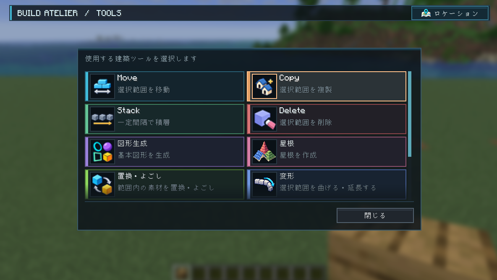
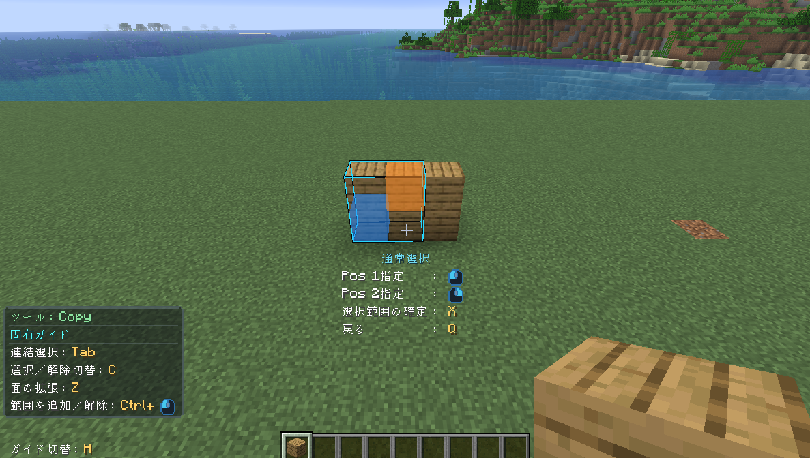
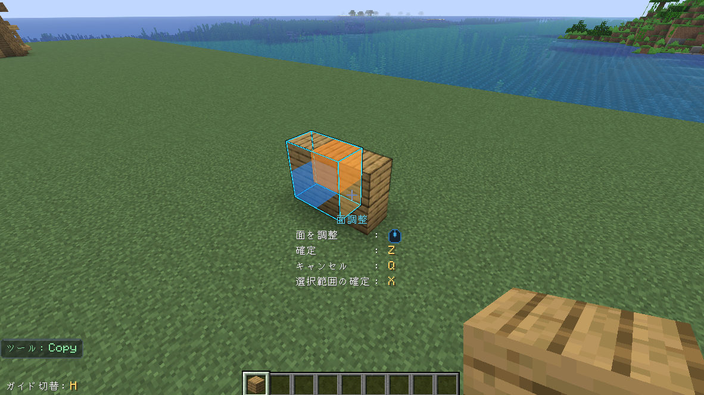
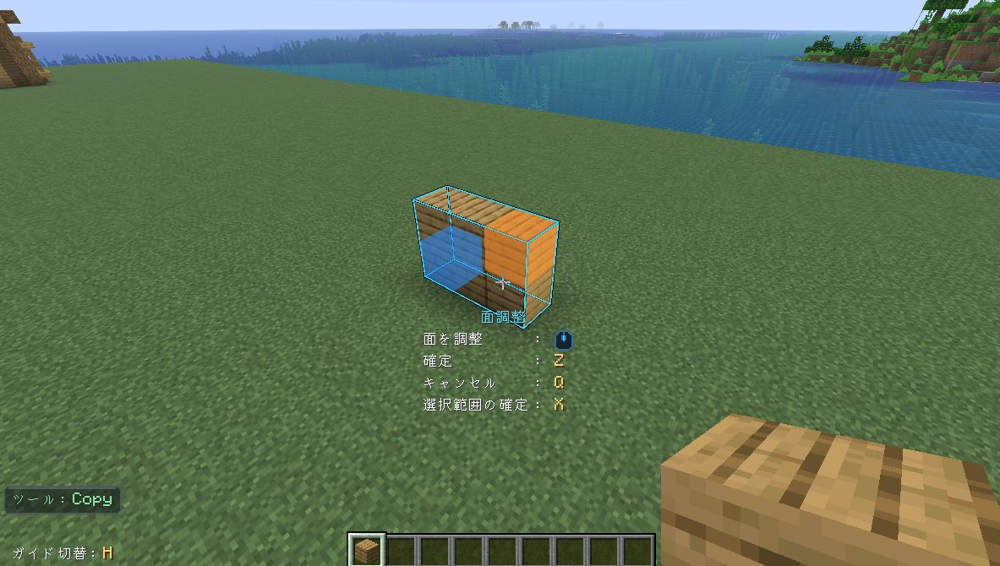
3. ゴーストを動かす
ゴーストを狙い、左クリックを長押ししたままプレイヤーを移動すると、ゴーストも一緒に動きます。長押しを解除すると、その位置を保持します。
矢印キーで左右・高さ、ホイールで前後を微調整し、Rで90度回転します。まずは元の壁と重ならない場所に置きましょう。
Qなら実配置せず選択へ戻れます。
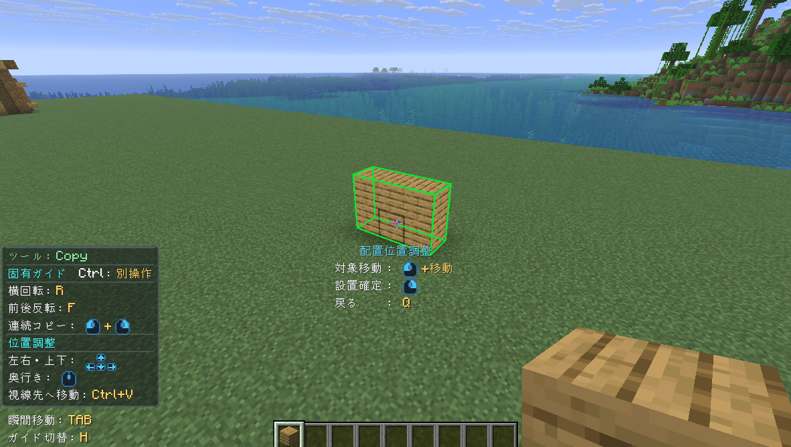
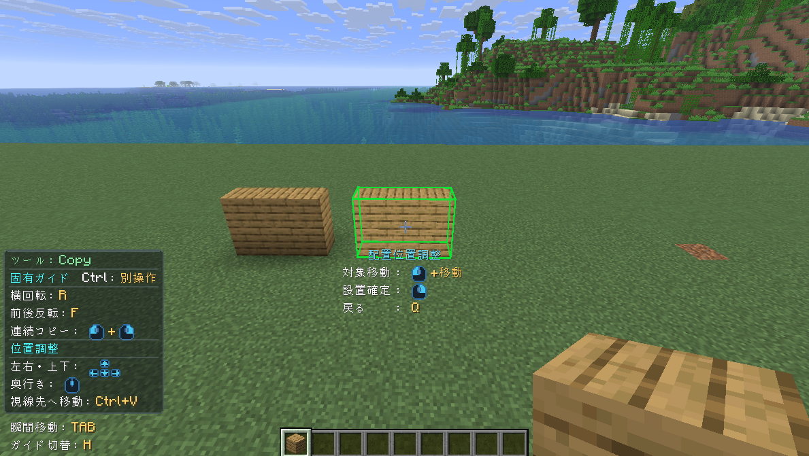
4. Copyで配置する
長押しを解除してから右クリックし、処理完了を待ちます。元の壁が残り、もう1つ同じ壁ができれば成功です。
左クリックを長押ししたまま右クリックすると、その位置に追加のゴーストを残して、続けて移動できます。今回は長押しを解除してから、右クリックで配置を確定してください。
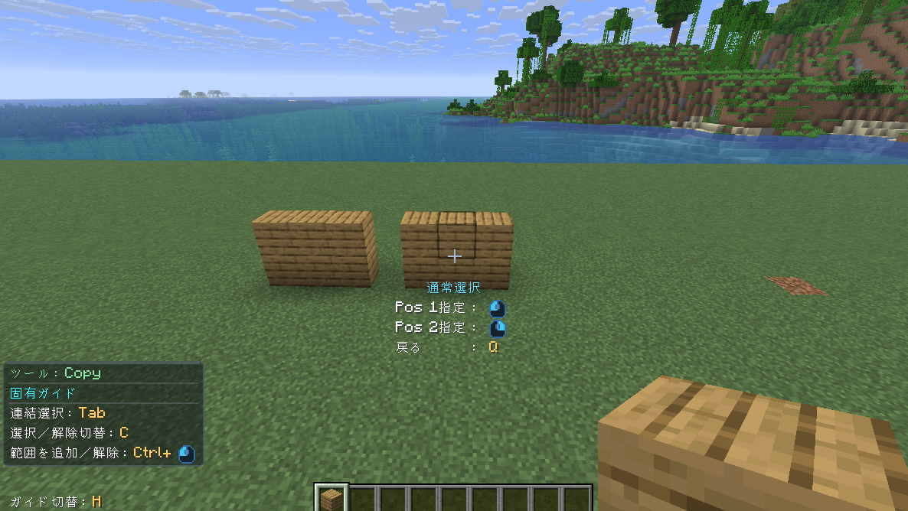
5. Undo・Redoを試す
Undoは直前の操作を取り消して元に戻す操作、Redoは取り消した操作を再適用する操作です。
新しい範囲を選び始める前にCtrl＋Zでコピーを取り消し、Ctrl＋Yで再適用します。分かりにくい場合はQでツールを終了してから操作します。
スニークがCtrlの方はShift＋Z／Yです。
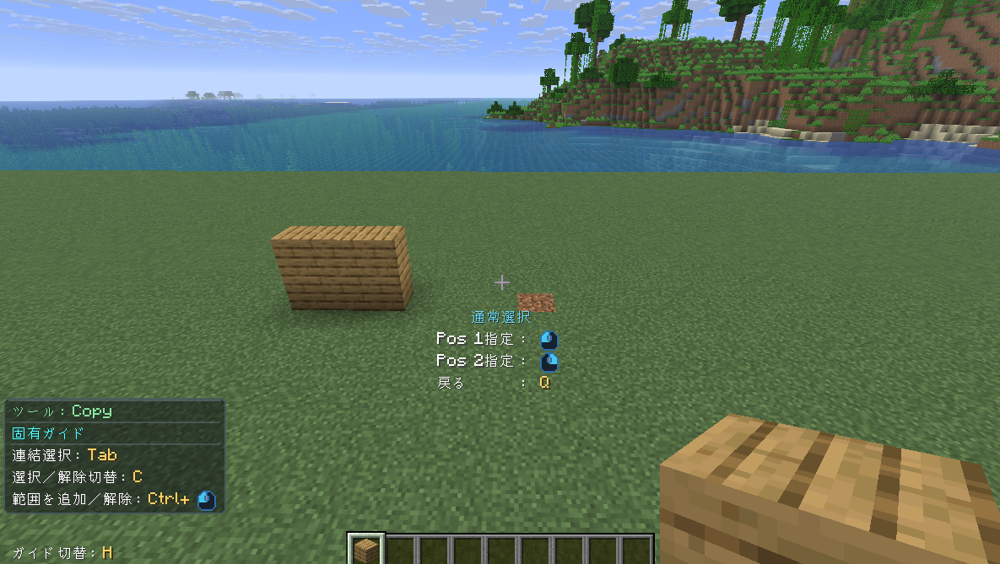
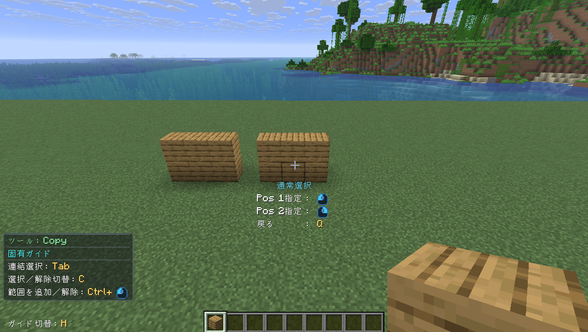
6. Moveで位置を調整
左AltからMoveを選び、コピーした壁だけを選択してX。ゴーストを別の空いた場所へ動かします。
この間、移動元の壁はそのまま残っています。長押しを解除して右クリックで配置を確定すると、元の位置から移動先へ壁が移ります。
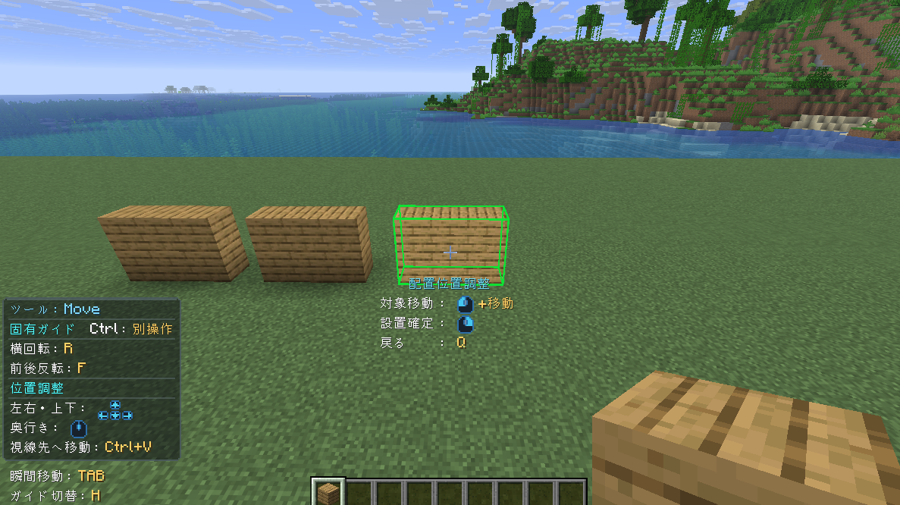
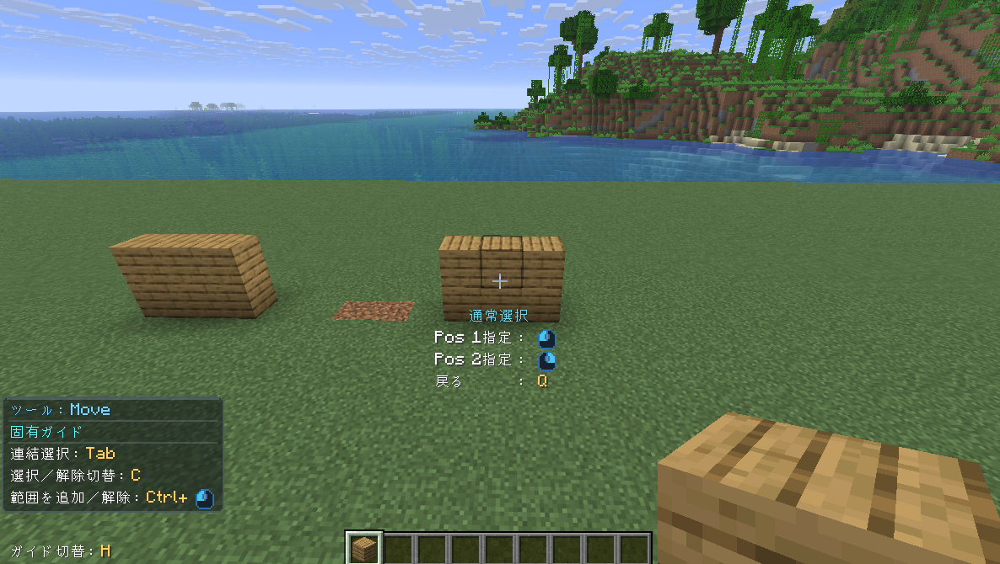
7. Stackで並べる
左AltからStackを選び、壁を選択してX。左右矢印またはホイールで一方向へ2〜3個だけ複製を伸ばします。逆方向の操作で減らせます。
並びを確認して右クリックでまとめて配置します。
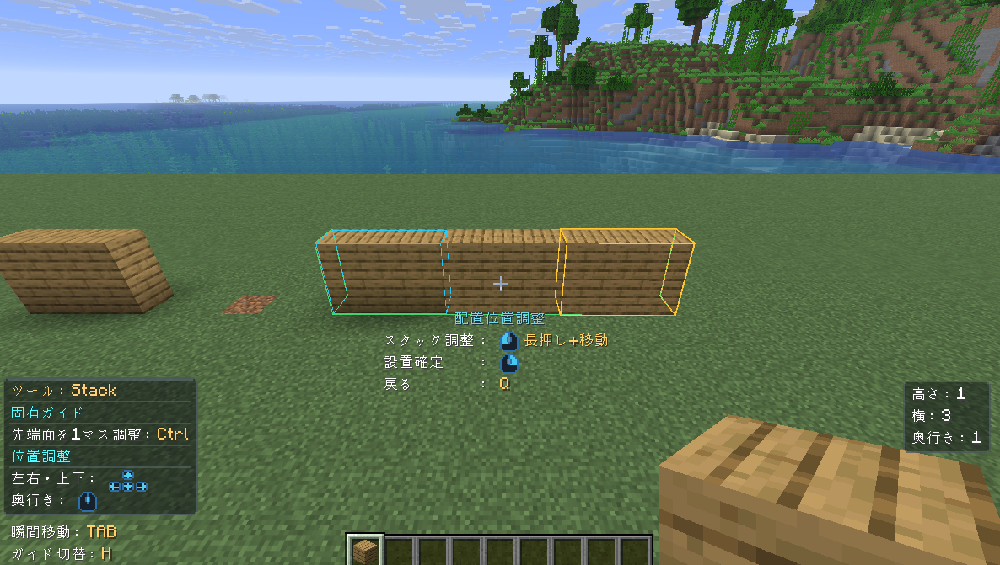
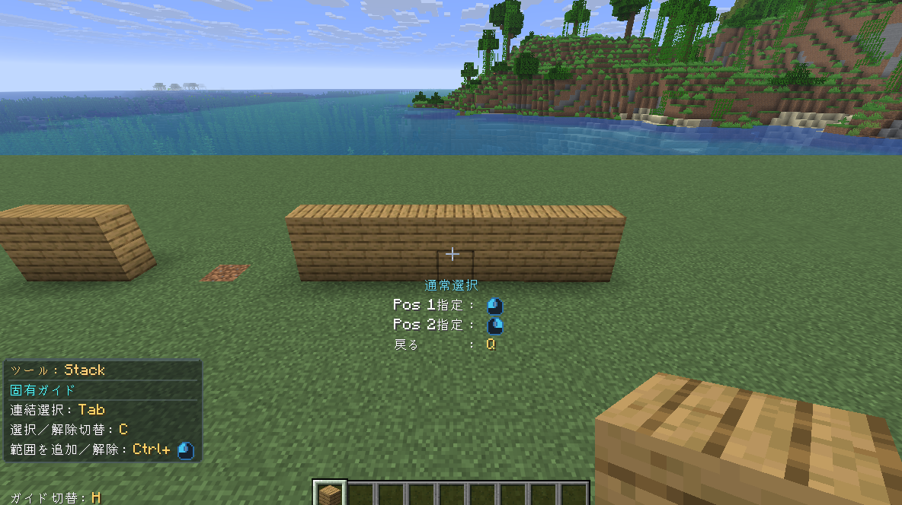
8. Deleteで片付ける
左AltからDeleteを選び、増やした壁のうち不要なものだけを選択します。Xで削除範囲を確認し、右クリックで削除します。
地面や残す壁を含めないでください。最後にCtrl＋Zで削除を戻して、練習を終えます。
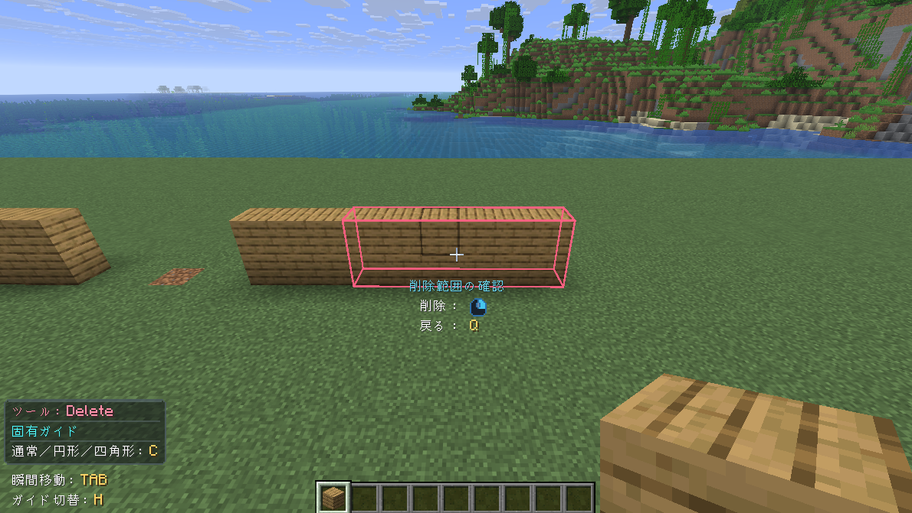
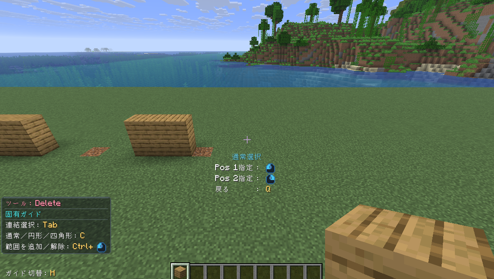
Build Atelierの全機能
入門編は以上です。Build Atelierには、今回紹介した基本操作のほかにも、建材ラック、ライブラリ、屋根づくり、よごしなど、建築を助けるさまざまな機能があります。
それぞれの機能の使い方は、下のリンクからご確認ください。